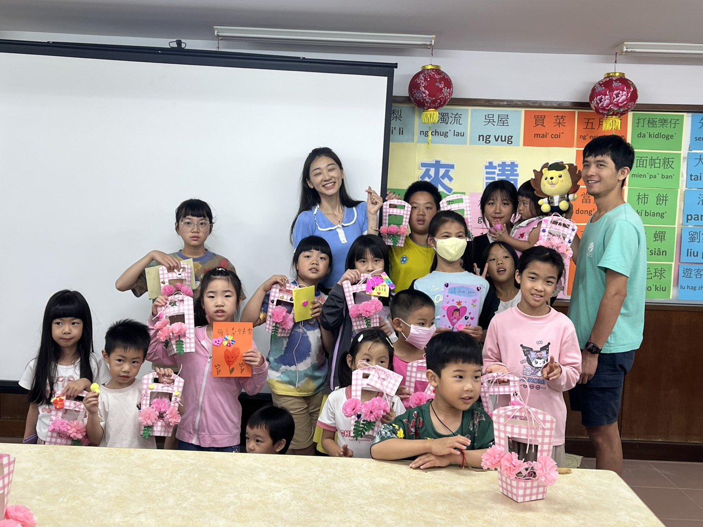
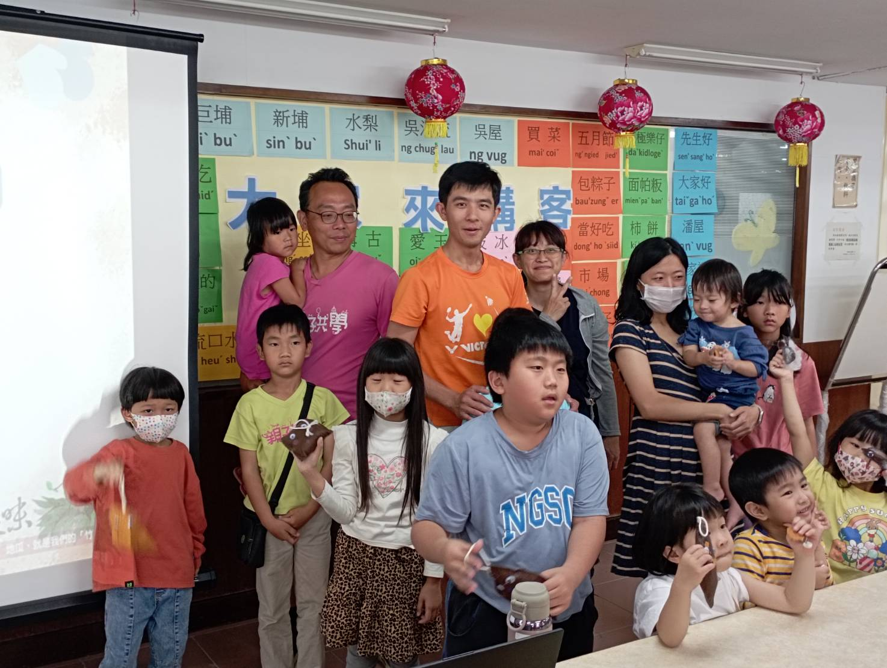
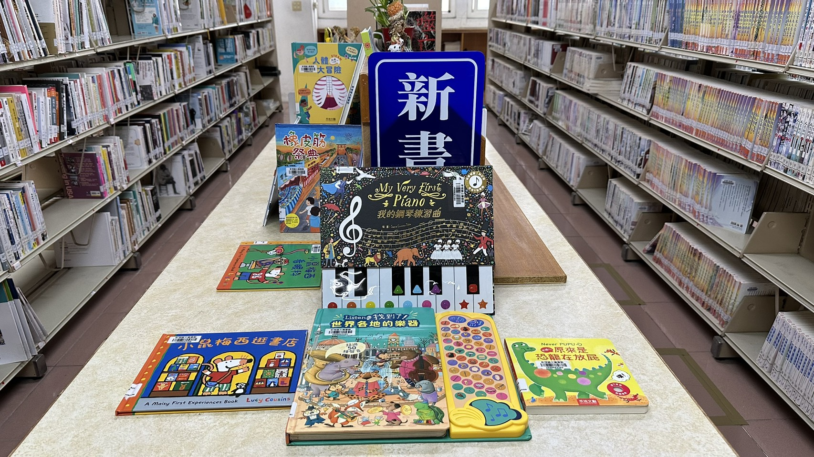
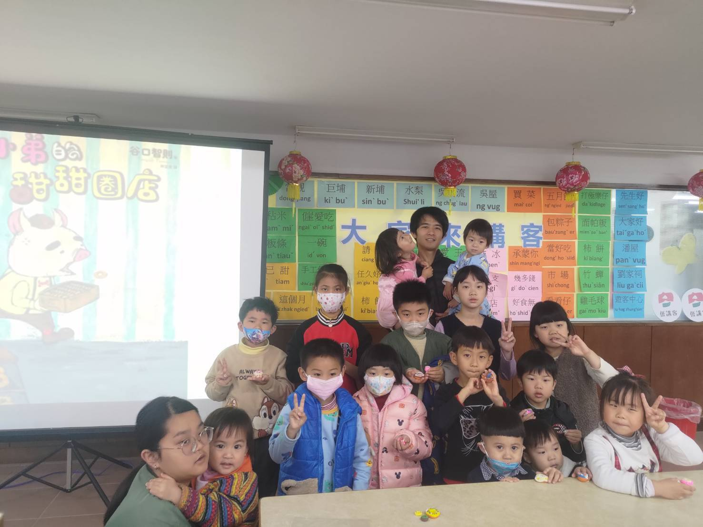

最新活動資訊
報名紀錄查詢-

狀態：已額滿【新埔館活動】新埔鎮圖書館114年5月10日〔我媽媽〕故事活動剪影，家長帶著小朋友一起玩樂。
活動時間：報名時間： -其他活動 新埔分館 -

狀態：已報名【新埔館活動】新埔鎮圖書館114年4月20日〔地瓜打嗝了〕故事活動剪影，家長帶著小朋友一起玩樂。
活動時間：報名時間： -電影欣賞 新埔分館 -

狀態：備取中【新埔館公告】新埔鎮鎮圖書館114.4.6新書Listen!找到了!世界各地的樂器、巨大機場等上架了，喜歡閱讀的鄉親有空可以來圖書館看書或借閱，也歡迎家長帶小朋友一起來。
活動時間：報名時間： -其他活動 新埔分館 -

【新埔館活動】新埔鎮圖書館114年3月30日〔豬小弟的甜甜圈店〕故事活動剪影，家長帶著小朋友一起玩樂。
活動時間：報名時間： -其他活動 新埔分館 -
【新埔館活動】新埔鎮圖書館114年5月10日〔我媽媽〕故事活動剪影，家長帶著小朋友一起玩樂。
活動時間：報名時間： -其他活動 新埔分館 -
狀態：已額滿
【新埔館活動】新埔鎮圖書館114年4月20日〔地瓜打嗝了〕故事活動剪影，家長帶著小朋友一起玩樂。
活動時間：報名時間： -電影欣賞 新埔分館 -
狀態：已額滿
【新埔館公告】新埔鎮鎮圖書館114.4.6新書Listen!找到了!世界各地的樂器、巨大機場等上架了，喜歡閱讀的鄉親有空可以來圖書館看書或借閱，也歡迎家長帶小朋友一起來。
活動時間：報名時間： -其他活動 新埔分館 -
【新埔館活動】新埔鎮圖書館114年3月30日〔豬小弟的甜甜圈店〕故事活動剪影，家長帶著小朋友一起玩樂。
活動時間：報名時間： -其他活動 新埔分館